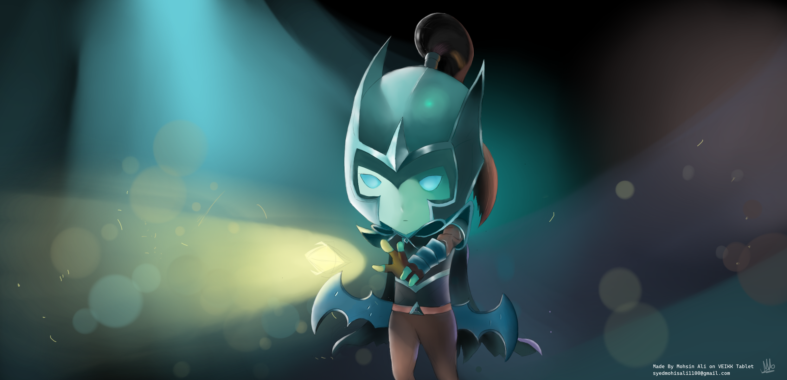
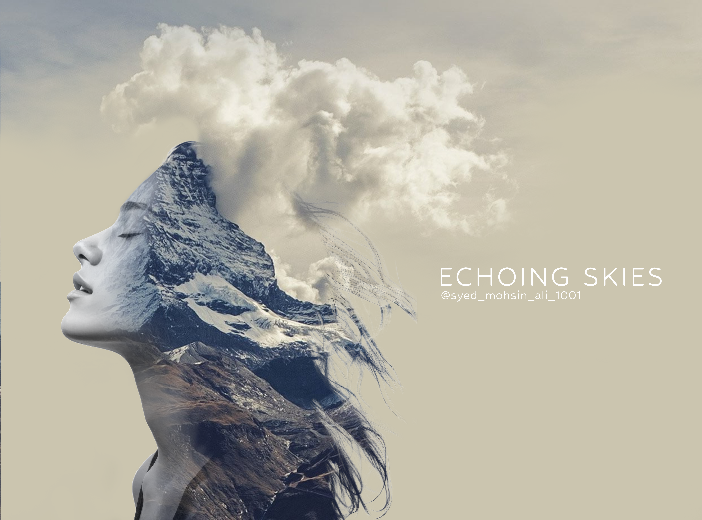

Projects

No Man's Enemy
A Pakistani soldier ordered to capture an enemy makes a decision that costs him everything except his humanity.

The Last Drop
Two robots. One canister of fuel. A meditation on scarcity, selfishness, and the choice between survival and solidarity.

Rust and Resolve
A damaged delivery robot refuses to stop. Its last package. Its last charge. Its only purpose left.

Lahore Recontextualization
A chai shop. A quiet night in Lahore. One frame, one feeling, one memory made still.

Top Gun F-18
A flight physics study in Blender. Afterburner glow, G-force movement, and the raw feeling of a jet at full throttle.

Formula 1
Tire smoke, light scatter, and speed. A Blender experiment in how materials and physics behave at the limit.

Formula 1 — Second Pass
A second take on the same physics study. More smoke, more speed, same obsession with getting it to feel right.

Slender Man Remake
A ground-up UE5 rebuild of Slender Man with a custom map. Blueprinting, lighting, and learning how to make a game feel like one.

Zero Path
A 2D rocket game built solo in P5.js. Flight mechanics, enemy AI, boss fight, and all art created from scratch.

The Letter
A medieval journey to find an old friend. The destination is reached. The ending stays a mystery.

Photography
Places, light, and moments worth keeping. Shot across different locations between projects.

Art
A mix of digital anime sketches and physical drawings, made between projects.

Posters
Event and promotional poster designs. Full catalogue on PosterMyWall.

Race Car Edit
A cinematic GT3 edit. Pacing, grade, and rhythm cut to the drive.

Timeless
A short-form edit built around mood and rhythm.

Website
This portfolio site — designed and built from scratch.
The story
behind the work
I'm a Visual Communication Design student at BNU, building at the intersection of art, technology, and narrative design.
My background in programming and interactive media has shaped the way I approach design. It allows me to think beyond aesthetics, combining creativity with technical problem-solving to create experiences that are both visually compelling and thoughtfully built. I enjoy understanding not only how something looks, but also how it works beneath the surface.
My work lives in cinematic storytelling: animation, 3D environments, immersive experiences. I'm drawn to atmosphere, composition, and the emotional weight of a well-crafted frame. Whether in Blender, Unreal Engine 5, or on a camera, the question is always the same: what should this make someone feel?
Beyond the studio, I photograph the places I move through, landscapes, architecture, moments. It is how I stay sharp as an observer.
- Blender
- Unreal Engine 5
- Adobe Photoshop
- Premiere Pro
- GDevelop
- Python
- P5.Js
- C++
- 3D Animation
- Environment Art
- Game Design
- Video Production
- Photography
- BNU, VCD